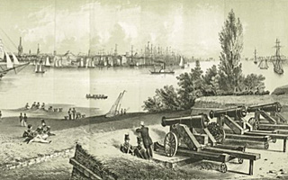

Sodden earth ramparts were built and cannon batteries were put in place overlooking the Buttermilk Channel, the southern shore facing the Lower Bay, and the approach from the Jersey Shore and Hudson River. The main defenses were centered on Fort Jay, named for John Jay (1745-1829), one of the Founding Fathers and the first chief justice of the U.S. Supreme Court.
On Feb. 15, 1800, New York ceded Governors Island to the United States. Improvements began under the French engineer Charles Vincent to what would become Fort Jay. The outer pentagonal parapet of earth was backed with brick, and inside four masonry bastions. Ninety-six guns were put in place and they could sweep the whole landscape around the entire harbor. Inside the fort, walls were extended for barracks for 1,000 soldiers. The army built a hospital, kitchens and installed a pump to bring up fresh water. In 1807 the fortification that would become Castle Williams was undertaken, under the direction of the founder of the U.S. Army Corps of Engineers, Lt. Col. Jonathan Williams.
In 1810, John Jay fell out of public favor, and his name was removed from the fort. It was renamed Fort Columbus, a name it held for the rest of the 19th Century. In 1811 Castle Williams opened. Its complementary structure is Castle Clinton, in Battery Park. In 1812 the South Battery was built to guard Buttermilk Channel.

Fort Columbus overlooking New York, 1816 (LOC)
During the early 1800s Fort Columbus had a "Black Hole" prison for soldiers. Non-commissioned officers were reduced in rank by having their insignia removed from their epaulettes "by the smallest drummer in the battalion." In 1821 the local Army headquarters transferred from Manhattan to Governors Island. The following year, Castle Clinton was ceded to New York, and the troops garrisoned there moved to the island.
Lining the island's northern waterfront are the former New York Arsenal buildings. Built after the War of 1812, the weathered brick walls have withstood almost 200 years of New York Harbor weather. The Arsenal was established on the island by 1833, north of what is now Andes Road and adjacent to the main docks; the ease of shipping supplies in and out of New York Harbor was a key motivation to locating the Arsenal here. Seven buildings original to this period survive, dating from c. 1835 to 1875. The buildings themselves had to be located below the range of the guns on Fort Columbus.
The 1830s and 1840s time period on the island was an era when life for the soldiers was training, recruiting and garrison work. There were less than 200 men stationed on the island. The next 50 years would be much more interesting.